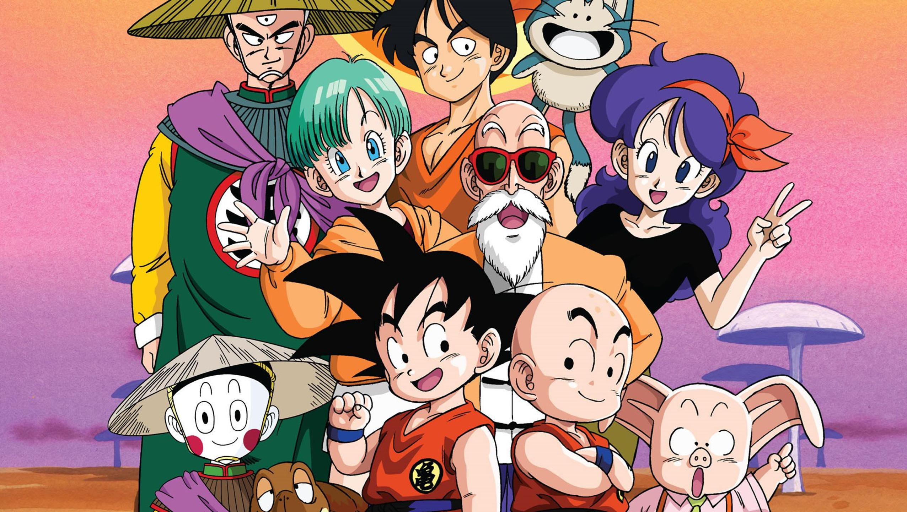
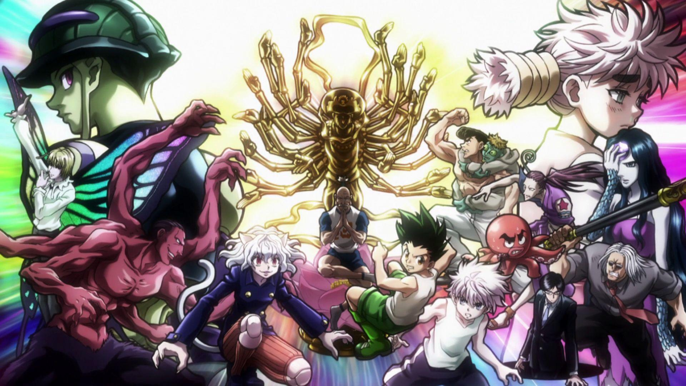

Dragon Ball

Gokuu Son is a young boy who lives in the woods all alone—that is, until a girl named Bulma runs into
him in her search for a set of magical objects called the "Dragon Balls." Since the artifacts are said
to grant one wish to whoever collects all seven, Bulma hopes to gather them and wish for a perfect
boyfriend. Gokuu happens to be in possession of a dragon ball, but unfortunately for Bulma, he refuses
to part ways with it, so she makes him a deal: he can tag along on her journey if he lets her borrow the
dragon ball's power. With that, the two set off on the journey of a lifetime.
They don't go on the journey alone. On the way, they meet the old Muten-Roshi and wannabe disciple
Kuririn, with whom Gokuu trains to become a stronger martial artist for the upcoming World Martial Arts
Tournament. However, it's not all fun and games; the ability to make any wish come true is a powerful
one, and there are others who would do much worse than just wishing for a boyfriend. To stop those who
would try to abuse the legendary power, they train to become stronger fighters, using their newfound
strength to help the people around them along the way.
Watch Now
Death Note
A shinigami, as a god of death, can kill any person—provided they see their victim's face and write
their victim's name
in a notebook called a Death Note. One day, Ryuk, bored by the shinigami lifestyle and interested in
seeing how a human
would use a Death Note, drops one into the human realm.
High school student and prodigy Light Yagami stumbles upon the Death Note and—since he deplores the
state of the world—tests the deadly notebook by writing a criminal's name in it. When the criminal dies
immediately following his experiment with the Death Note, Light is greatly surprised and quickly
recognizes how devastating the power that has fallen into his hands could be.
With this divine capability, Light decides to extinguish all criminals in order to build a new world
where crime does not exist and people worship him as a god. Police, however, quickly discover that a
serial killer is targeting criminals and, consequently, try to apprehend the culprit. To do this, the
Japanese investigators count on the assistance of the best detective in the world: a young and eccentric
man known only by the name of L.
Watch Now
Demon Slayer

Ever since the death of his father, the burden of supporting the family has fallen upon Tanjirou
Kamado's shoulders. Though living impoverished on a remote mountain, the Kamado family are able to enjoy
a relatively peaceful and happy life. One day, Tanjirou decides to go down to the local village to make
a little money selling charcoal. On his way back, night falls, forcing Tanjirou to take shelter in the
house of a strange man, who warns him of the existence of flesh-eating demons that lurk in the woods at
night.
When he finally arrives back home the next day, he is met with a horrifying sight—his whole family has
been slaughtered. Worse still, the sole survivor is his sister Nezuko, who has been turned into a
bloodthirsty demon. Consumed by rage and hatred, Tanjirou swears to avenge his family and stay by his
only remaining sibling. Alongside the mysterious group calling themselves the Demon Slayer Corps,
Tanjirou will do whatever it takes to slay the demons and protect the remnants of his beloved sister's
humanity.
Watch Now
Hunter x hunter

Hunter x Hunter is set in a world where Hunters exist to perform all manner of dangerous tasks like
capturing criminals and bravely searching for lost treasures in uncharted territories. Twelve-year-old
Gon Freecss is determined to become the best Hunter possible in hopes of finding his father, who was a
Hunter himself and had long ago abandoned his young son. However, Gon soon realizes the path to
achieving his goals is far more challenging than he could have ever imagined.
Along the way to becoming an official Hunter, Gon befriends the lively doctor-in-training Leorio,
vengeful Kurapika, and rebellious ex-assassin Killua. To attain their own goals and desires, together
the four of them take the Hunter Exam, notorious for its low success rate and high probability of death.
Throughout their journey, Gon and his friends embark on an adventure that puts them through many
hardships and struggles. They will meet a plethora of monsters, creatures, and characters—all while
learning what being a Hunter truly means.
Watch Now
Jujutsu kaisen

Idly indulging in baseless paranormal activities with the Occult Club, high schooler Yuuji Itadori spends his days at either the clubroom or the hospital, where he visits his bedridden grandfather. However, this leisurely lifestyle soon takes a turn for the strange when he unknowingly encounters a cursed item. Triggering a chain of supernatural occurrences, Yuuji finds himself suddenly thrust into the world of Curses—dreadful beings formed from human malice and negativity—after swallowing the said item, revealed to be a finger belonging to the demon Sukuna Ryoumen, the "King of Curses." Yuuji experiences first-hand the threat these Curses pose to society as he discovers his own newfound powers. Introduced to the Tokyo Metropolitan Jujutsu Technical High School, he begins to walk down a path from which he cannot return—the path of a Jujutsu sorcerer.